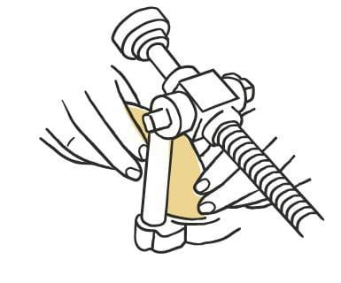
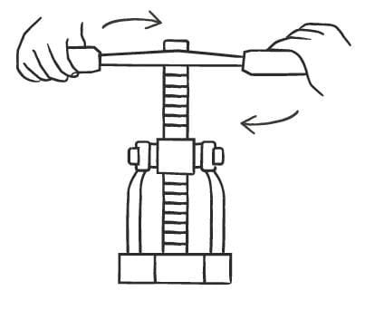
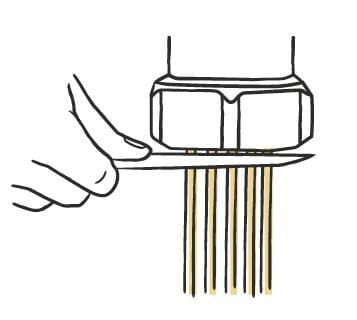
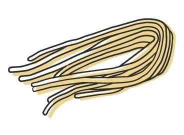
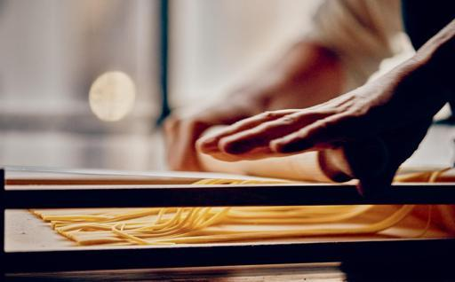
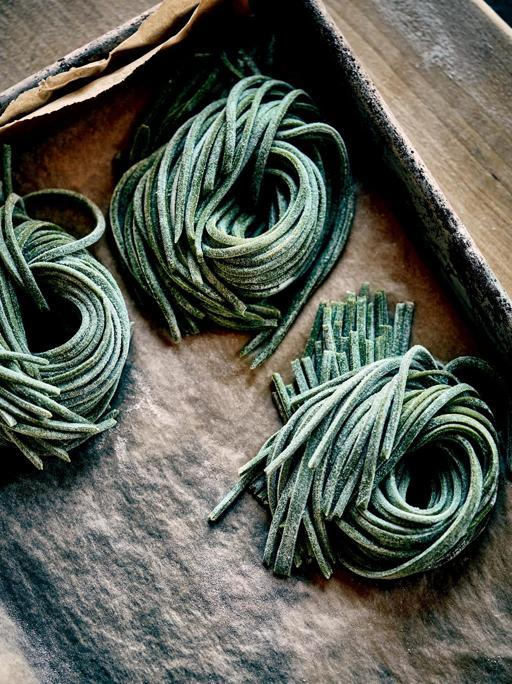

Pasta / Shapes
Bigoli
- Region
- The Veneto, especially Venice; Istria; southeastern Lombardy around Mantua
- Rest
- 20 to 30 minutes at room temperature
- Source
- Pasta, Missy Robbins
- Formed
- extruded
Shaping






Method
- Make the whole-wheat dough.
- Dust a wooden work surface lightly with 00 flour. Set out a parchment-lined sheet pan, dusted lightly with semolina. Clamp the bigolaro to the edge of the work surface.
- Quarter the dough. Keep three pieces under plastic wrap or a towel and work with one.
- Roll the piece into a cylinder roughly 2 inches across, sized to drop into the bigolaro chamber.
- Load the cylinder and turn the lever to extrude. Cut the strands to 12 inches with a knife.
- Dust the strands generously with 00 flour and shake them gently apart. Curl each batch into a horseshoe and set it on the pan.
- Repeat with the remaining quarters.
- Dry 20 to 30 minutes at room temperature.
- To hold, wrap the pan and refrigerate up to 24 hours.
Notes
- Requires a bigolaro — a tabletop hand press clamped to the work surface, worked by a lever, that forces the dough out as long thick strands.
- Dough cylinder about 2 inches in diameter; the chamber sets the limit.
- Strands cut to 12 inches by hand.
- Whole-wheat dough. The book blends whole-wheat or buckwheat flour with 00 rather than using the alternative flour alone, and leaves out the butter and milk that some versions include, on the grounds that both cost the pasta its bite.
- Similar to pici, but extruded rather than hand-rolled. Called fusarioi in Istria.
- Keeps refrigerated up to 24 hours.
- Served with anchovy and onion sauce in the Venetian manner, sardine and onion around Mantua, or rich meat sauces.